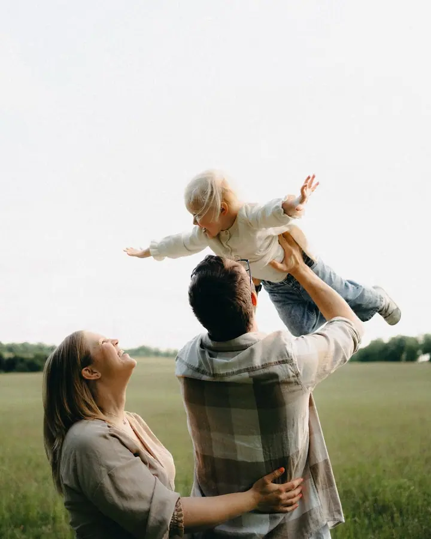
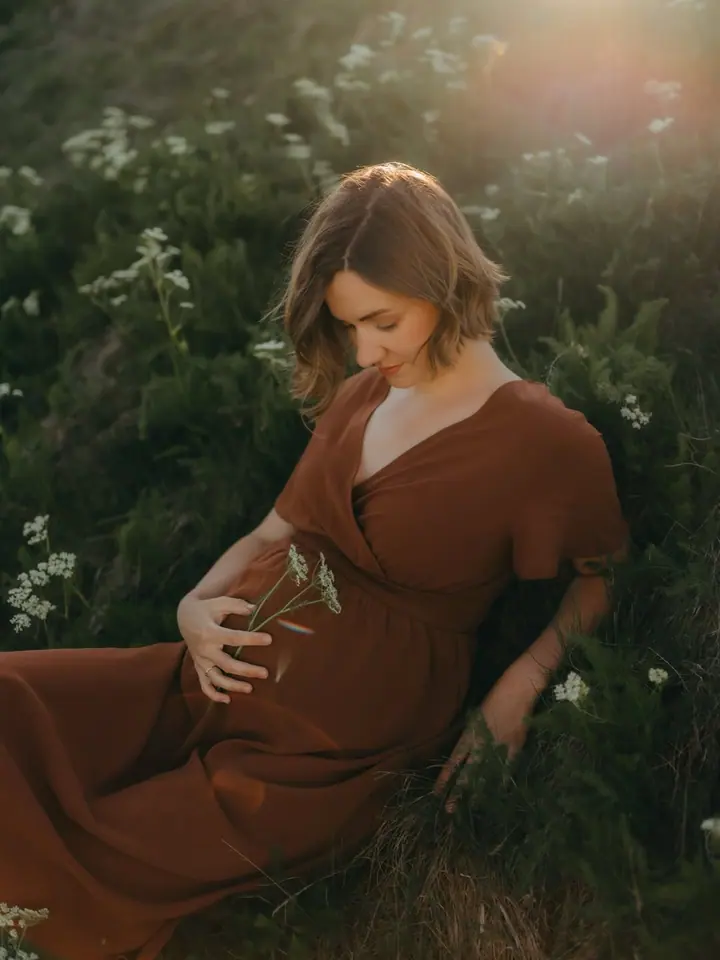
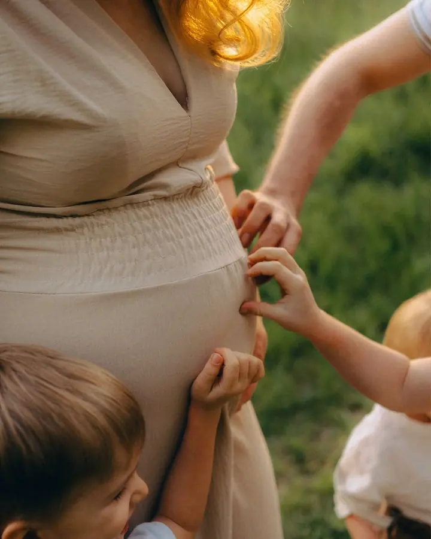

Rodinné focení
Focení venku nebo u vás doma, plné hravých i něžných momentů. Nikoho nestavím do strojených póz, raději vás nechám spolu blbnout a tulit se.

Jmenuji se Monika a jsem rodinná a svatební fotografka z Chomutova a Táboru. Jsem máma dvou kluků, a tak vím, jak rychle ty malé chvíle utečou. Fotím rodiny, bříška i sv…
Rezervovat termínDřív jsem byla paní učitelkou v mateřské škole. Dnes jsem hlavně máma dvou kluků a holka z vesnice, co má ráda hořkou čokoládu a plní si svůj sen: fotit lásku skrz objektiv.


Na focení vás nebudu stavět do strojených póz. Spíš vymyslím hru nebo drobný úkol, u kterého se zasmějete a zapomenete, že vás někdo fotí. Fotit můžeme venku v přírodě nebo u vás doma, a když nevíte, co si vzít na sebe, poradím vám se stylingem a oblečení pro ženy a děti vám můžu i půjčit.
Na svatbě nechci, abyste měli pocit, že se celý den jen fotíte. Budu u velkých okamžiků i u pohledů hostů, objetí s babičkou, smíchu u stolu a večer na tanečním parketu. Ať si pak nad fotkami řeknete: Jo. Takhle přesně jsme ten den prožili.
Co fotím
Focení venku nebo u vás doma, plné hravých i něžných momentů. Nikoho nestavím do strojených póz, raději vás nechám spolu blbnout a tulit se.
Rostoucí bříško a radost z čekání na miminko. Když si u mě domluvíte těhotenské i novorozenecké focení, máte na novorozenecké slevu 20 %.
Kojení, nošení v šátku, tulení s dětmi venku i doma. Přátelský a respektující přístup od další mámy, jako jste vy.
Váš den vyfotím přesně takový, jaký byl, a ne podle toho, co je zrovna trendy na Pinterestu. Ceny začínají od 17 000 Kč a aktuálně obsazuji sezónu 2027.
Postup
Vyplňte krátký formulář a napište mi, o jaké focení máte zájem, kolik vás bude a jaké máte představy. Ozvu se vám co nejdřív.
Společně probereme, co si vzít na sebe. Pro ženy a děti vám můžu oblečení i zapůjčit.
Žádné strojené pózy. Budeme si hrát, povídat a smát se, a fotky vzniknou mezi tím.
V základním balíčku vybírám fotky já a posílám vám všechny, které jsou krásné a vyprávějí váš příběh. Je jich minimálně 60, běžně 70 až 90 i víc.
Otázky
Základní balíček stojí 3 600 Kč, Mini balíček s 12 upravenými fotkami 2 800 Kč a Extra balíček s tištěnými fotkami a dřevěným albem 4 200 Kč. Balíček Mateřství vyjde na 2 500 Kč. Svatby začínají od 17 000 Kč a podrobnou nabídku vám ráda pošlu e-mailem.
Venku v přírodě nebo u vás doma, v Chomutově, v Táboře a okolí.
Se stylingem vám ráda poradím a pro ženy a děti můžu oblečení zapůjčit. Na blogu najdete i článek o výběru oblečení od A po Z.
Aktuálně obsazuji svatební sezónu 2027. Do zprávy mi prosím napište termín a místo konání svatby.